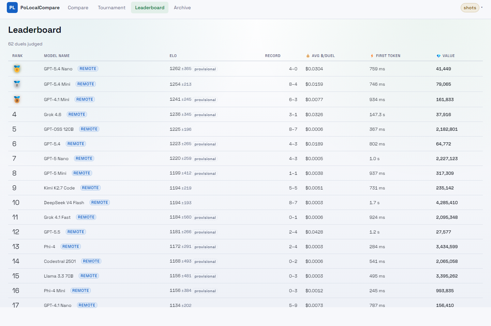
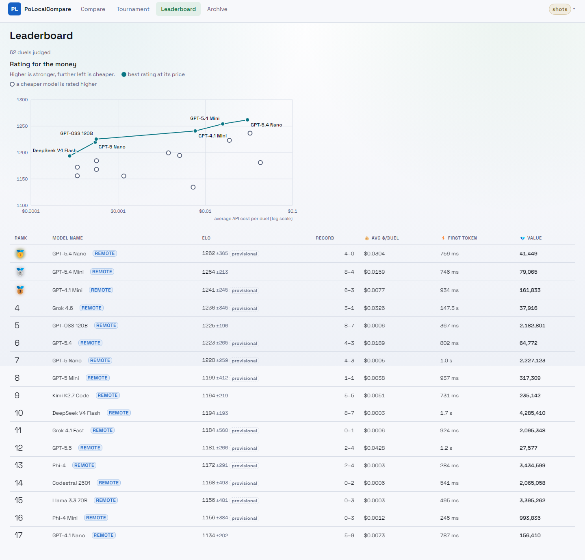
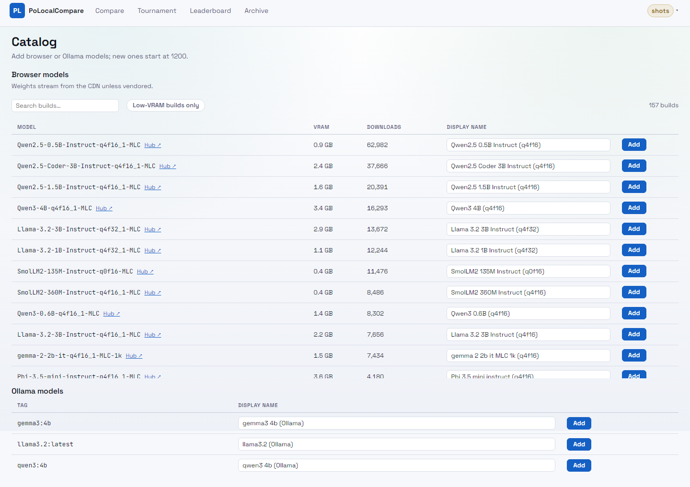
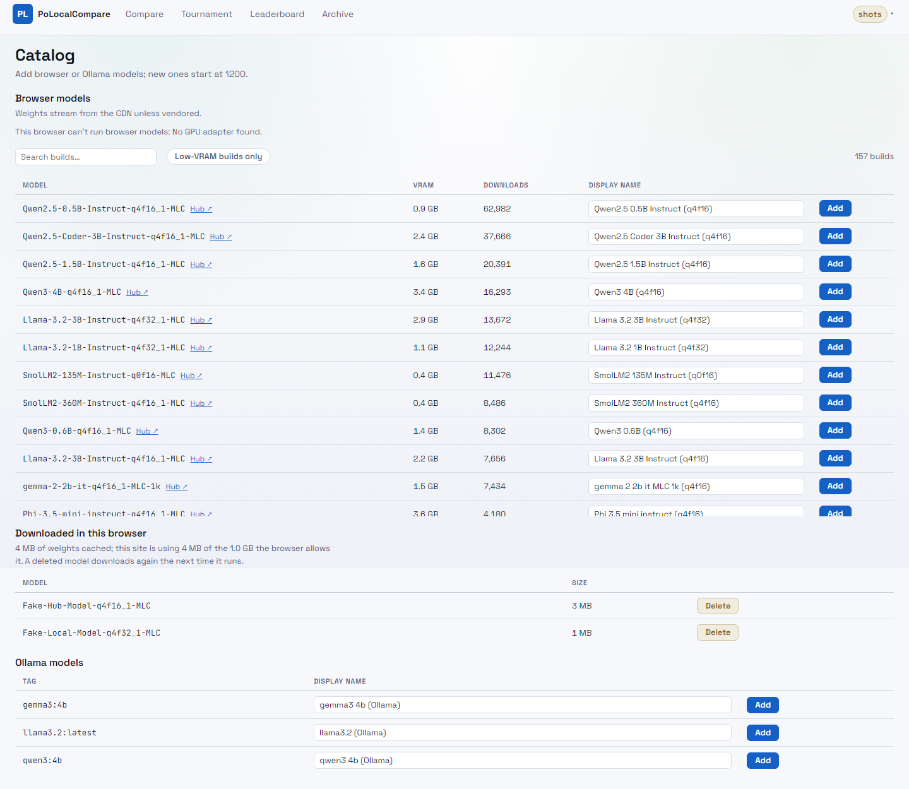

Desktop, 1440px, light theme. Red boxes mark what is new. The rate limit and the daily spend cap have no UI of their own, so they are not pictured.


The screenshot browser is headless and has no GPU, so the note reads "can't run browser models". The two cached models are test entries written into the Cache API to exercise the list and its Delete button.

